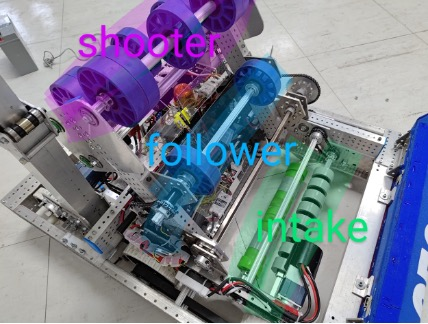
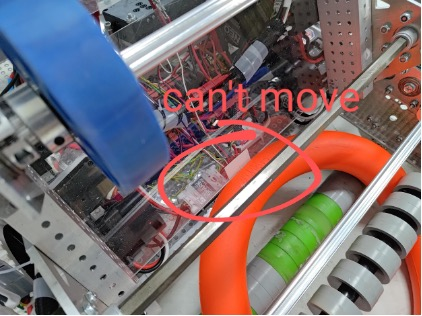

設計: 我需要將intake跟follower一起動，這樣才能將note吸到shooter射擊位置，接著再設計另外一個功能，是將shooter跟follower一起動，將note射出去。

package frc.robot;
//引入函式庫
import com.revrobotics.CANSparkMax;
import com.revrobotics.CANSparkLowLevel.MotorType;
//初始化
private CANSparkMax intake = new CANSparkMax(3, MotorType.kBrushless);
package frc.robot;
//引入函式庫
import com.revrobotics.CANSparkMax;
import com.revrobotics.CANSparkLowLevel.MotorType;
//初始化
private CANSparkMax follower = new CANSparkMax(27, MotorType.kBrushless);
射擊功能整合: 當按下xbox的A鍵時為射擊 當按下xbox的B鍵時為intake反轉退note 當按下xbox的X鍵時為吸note至準備位置
if(stick.getRawButton(1)){ //射擊
follower.set(-0.5);
shooter.set(0.8);
}else if(stick.getRawButton(2)){ //intake反轉退note
intake.set(0.5);
}else if(stick.getRawButton(3)){ //吸note至準備位置
intake.set(-0.5*note);
follower.set(-0.5*note);
else{ //全部馬達停止
intake.set(0);
follower.set(0);
shooter.set(0);
}
1.intake反轉: 有時候會遇到intake吸進來時，note會卡到pvc板，讓note進不到follower的位置，所以我設計於joystick的B鍵上讓intake可以反轉，就能解決這個問題
2.極限開關: 極限開關的功用為按鍵式,當觸發極限開關就能做一些動作。 為了能讓操作者更方便操作,我在follower跟shooter的中間放了一個極限開關,觸發時能讓intake加follower停止。這樣能讓note每次都能到精準的位置且不會因為intake按太久而讓note從shooter不小心飛出去。 (故障排除: 如果極限開關無法正常觸發,檢查連接線路是否鬆動;如果開關體積過大影響機構運作,考慮改用其他型號)
package frc.robot;
//引入函式庫
import edu.wpi.first.wpilibj.DigitalInput;
//極限開關初始化
private DigitalInput noteSwitch = new DigitalInput(0);
private int note = 1;
//如果觸發,note變0,導致:
//intake.set(-0.5*note);
//follower.set(-0.5*note);
//速度也變0
if(noteSwitch.get()){
note = 0;
}else{
note = 1;
}